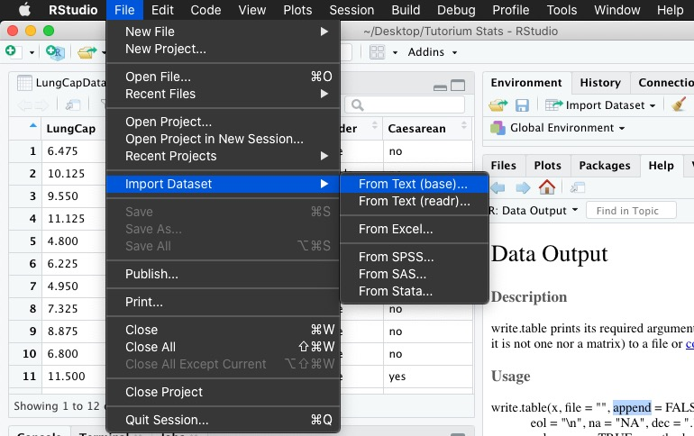

Sitzung 3
Wiederholung
Das Wichtigste vom letzten Mal
- Vektoren sind eindimensionale Tupel von Elementen
## [1] "svo" "sov" "ovs"## [1] 19Das Wichtigste vom letzten Mal
- Dataframes sind Tabellen (und damit 2-dimensional)
## [1] 19 2## a b
## 1 1 20## a b
## 18 18 37
## 19 19 38## a b c
## 1 1 20 21Das Wichtigste vom letzten Mal
## [1] 1 2 3 4 5 6## a b c
## 19 19 38 57## a b c
## 16 16 35 51
## 17 17 36 53
## 18 18 37 55
## 19 19 38 57## a b c
## 17 17 36 53
## 18 18 37 55
## 19 19 38 57Mehr zu Datenblättern
Spalten umbenennen
## low medium high
## 1 1 20 21
## 2 2 21 23
## 3 3 22 25
## 4 4 23 27
## 5 5 24 29
## 6 6 25 31Mehr Subsetting
- logische Bedingungen (beachtet hier das Komma! Wir arbeiten jetzt mit 2-dimensionalen Daten und müssen mit angeben, ob wir uns auf Zeilen oder Spalten beziehen)
## low medium high
## 17 17 36 53
## 18 18 37 55
## 19 19 38 57## low medium high
## 18 18 37 55
## 19 19 38 57## low medium high
## 10 10 29 39
## 12 12 31 43
## 14 14 33 47
## 16 16 35 51
## 18 18 37 55Noch mehr Subsetting
- Mengen:
%in%fungiert wie \(\in\) aus der Mengentheorie
## low medium high
## 5 5 24 29
## 6 6 25 31
## 7 7 26 33## low medium high
## 2 2 21 23
## 3 3 22 25
## 5 5 24 29
## 6 6 25 31
## 7 7 26 33Daten exportieren
Workspace
Wenn wir mir externen Daten (also solchen, die wir nicht in R generiert und/oder nicht nur in R verwenden wollen) arbeiten, müssen wir uns für einen Speicherort entscheiden. Ganz allgemein wird R ein Standardverezeichnis festlegen. Schaut mal eures nach.
## [1] "/Users/Maik/Library/Mobile Documents/com~apple~CloudDocs/Studium/Arbeit am SDP/Tut Inferenzstatistik"Workspace verändern
Wenn ihr das Arbeitsverzeichnis verändern wollt, könnt ihr dies mit setwd() machen. Wie genau ihr die Pfade festlegt, könnt ihr entweder im Internet nachschauen (das variiert ziemlich zwischen Windows und Mac) oder per Rstudio über den Tab “Files”
RStudio zum Workspace festlegen
Workspace verändern
Selbst wenn ihr RStudio verwendet, um das Arbeitsverzeichnis zu verändern, solltet ihr die Codezeile aus der Konsole in eurer Skript kopieren, damit ihr das beim nächsten Mal nicht nochmal erledigen müsst, sondern einfach den Code ausführen könnt.
## [1] "/Users/Maik/Desktop"write.csv/write.table
- weitere Parameter
- Zeilennummerierung übernehmen: row.names=TRUE/FALSE
- Die Zeilennummerierung wird als erste Spalte übernommen. Die Spaltenbezeichnungen werden dementsprechend nach links verschoben, sodass die col.names manuell angepasst werden müssen.
- Dezimalstellentrennungszeichen bestimmen: dec=„Trennungszeichen“
- Separatoren definieren: sep = „Separator“
- Strings in Anführungszeichen einschließen: quote = TRUE/FALSE
- Zeilennummerierung übernehmen: row.names=TRUE/FALSE
Übersicht
# Zeilennummerierung von R wird nicht in die neue Tabelle übernommen
write.table(d, "tab.csv", row.names = F)
# Erstellt eine Tabelle, die Tabstops als Zellentrenner benutzt
write.table(d, "tab.csv", sep = "\t")
# Erstellt eine Tabelle mit Kommas als Dezimalstellentrenner
write.table(d, "tab.csv", dec = ",")
# Erstellt eine Tabelle mit Semikolons als Separatoren
write.table(d, "tab.csv", sep = ";")
# NAs werden als "Nicht vorhanden" bezeichnet
write.table(d, "tab.csv", na = "Nicht vorhanden")Datenblatt speichern
Als nächstes können wir unseren Dataframe im Arbeitsverzeichnis unter dem angegebenen Namen abspeichern. Falls ihr andere Dateiformate verwenden wollt, schaut euch mal write.table an.
## low medium high
## 1 1 20 21
## 2 2 21 23
## 3 3 22 25
## 4 4 23 27
## 5 5 24 29
## 6 6 25 31Daten einlesen
Interlude: Dateiformate
Dateiformate
- Jede Datei wird in einem Dateiformat abgespeichert
- Endungen bestimmen die Art (z.B. ein Programm), mit welcher der Computer eine Datei öffnet
- Gägige Dateiendungen für unsere Zwecke
-Comma-separated values: .csv
- Tab-separated values: .tsv
- Text-Datei: .txt
- Unbestimmte Datei: .dat
- Excel: xls
- R kann xls nur mit bestimmten Paketen lesen
read.table()
- Voraussetzung: einzulesende Datei befindet sich im Arbeitsverzeichnis bzw. in einem im Arbeitsverzeichnis liegenden Unterordner
- wichtige optionale Argumente von
read.table/read.csv- header = TRUE/FALSE
- sep = “Separator für Einträge”
- oft verwendet: Komma, Semikolon, Leerzeichen oder Tabstopps
- dec = “Dezimalzahltrennungszeichen”
- beachte: R verwendet den Punkt und nicht das Komma als Dezimaltrenner
- na.strings = “Zeichenkette, die als NA definiert werden soll” (oder Vektor mit mehreren Strings)
- skip = Zeile, bis zu der übersprungen werden soll
- blank.lines.skip = TRUE
- comment.char = “Kommentarzeichen”
Ein Beispiel
Ich habe hier ein einfaches Beispiel, bei dem man keine weiteren Parameter angeben muss, damit ihr sehen könnt, wie es funktioniert.
Bei Gelingen sieht das dann so aus:
## id item judgment tester years months
## 1 3536fed0235c7b34a33ddf06fb91b390 schaffen4_at 5 mailin 5 1
## 2 3536fed0235c7b34a33ddf06fb91b390 schaffen1_non 5 mailin 5 1
## 3 3536fed0235c7b34a33ddf06fb91b390 cleft2_non 5 mailin 5 1
## 4 3536fed0235c7b34a33ddf06fb91b390 appRel3_non 5 mailin 5 1
## 5 3536fed0235c7b34a33ddf06fb91b390 appRel9_non 4 mailin 5 1
## 6 3536fed0235c7b34a33ddf06fb91b390 gewinnen2_non 4 mailin 5 1
## gender issue trigger itemid lex
## 1 w at-issue soft schaffen4 schaffen
## 2 w non-at-issue soft schaffen1 schaffen
## 3 w non-at-issue hard cleft2 cleft
## 4 w non-at-issue appositive RC appRel3 appRel
## 5 w non-at-issue appositive RC appRel9 appRel
## 6 w non-at-issue soft gewinnen2 gewinnenVorsicht
Beachtet man die genannten Parameter nicht, bekommt man schnell unbrauchbaren Datensalat:
## blablablablabla.wejfuwejfnqj.qfnwejfn
## 1 1\t1\ta\tdass der Peter den Hans mag.
## 2 1\t1\tb\tdass den Hans der Peter mag.
## 3 1\t1\tc\tdass der Peter sicherlich den Hans mag.
## 4 1\t1\td\tdass den Hans sicherlich der Peter mag.
## 5 1\t2\ta\tdass die Frau den Bäcker liebt.
## 6 1\t2\tb\tdass den Bäcker die Frau liebt.Übungen
Lese die folgenden Dateien in R ein (Objektzuweisung nicht vergessen!):
- alldata.dat
- Beispiel.csv
- Tutorium_dat3.txt
- NHIS_2007_data4.csv
- lungen.txt
- Tutorium_4.dat
- raw.txt
- raw2.txt
- master.txt
Lösungen
## id geo subject variant experiment item condition judgement
## 1 m-1987-EMusik bla 1 1 9 4 a 6
## 2 m-1987-EMusik bla 1 1 8 2 b 7
## 3 m-1987-EMusik bla 1 1 7 10 b 7
## 4 m-1987-EMusik bla 1 1 9 3 d 1
## 5 m-1987-EMusik bla 1 1 1 8 d NA
## 6 m-1987-EMusik bla 1 1 8 9 a 6## subject item condition judgement F1 F2
## 1 1 10 b 3 0 1
## 2 1 4 d 4 1 1
## 3 1 15 c 7 1 0
## 4 1 9 a 2 0 0
## 5 1 16 d 1 1 1
## 6 1 13 a 7 0 0Lösungen
# "Tutorium_dat3.txt"
d3 <- read.table("docs/data/tut3/Tutorium_dat3.txt", header = T, sep = "\t")
head(d3)## ProbandIn Geschlecht Treatment Zeit1 Zeit2 Zeit3
## 1 1 f 1 19.7 19.7 20.5
## 2 2 f 2 14.2 16.9 17.3
## 3 3 f 3 11.2 14.2 17.2
## 4 4 f 1 18.8 20.3 28.5
## 5 5 f 2 14.8 25.3 30.2
## 6 6 f 3 11.1 12.1 16.2# "NHIS_2007_data4.csv"
d4 <- read.csv("docs/data/tut3/NHIS_2007_data4.csv", header = T, sep = ";",
dec = ",")
head(d4)## HHX FMX FPX SEX BMI SLEEP educ height weight
## 1 16 1 2 1 33.36 8 16 74 260
## 2 20 1 1 1 26.54 7 14 70 185
## 3 69 1 2 2 32.13 7 9 61 170
## 4 87 1 1 1 26.62 8 14 68 175
## 5 88 1 1 2 27.13 8 13 66 168
## 6 99 1 1 2 99.99 98 12 98 998Lösungen
# "lungen.txt"
d5 <- read.table("docs/data/tut3/lungen.txt", header = T, sep = "|",
dec = ",")
head(d5)## Lungenkapazität Alter Größe Raucher Geschlecht Kaiserschnitt
## 1 6.475 6 62.1 no male no
## 2 11.125 14 71.0 no male no
## 3 4.800 5 56.9 no male no
## 4 7.325 11 70.4 no male no
## 5 8.875 15 70.5 no male no
## 6 6.800 11 59.2 no male no# "Tutorium_4.dat"
d6 <- read.table("docs/data/tut3/Tutorium_4.dat", sep = ";", dec = ",",
header = F, na.strings = c("umgeknickt", "verdorrt"))
head(d6)## V1 V2 V3 V4 V5
## 1 1 1 19.7 19.7 20.5
## 2 1 2 14.2 18.9 27.3
## 3 1 3 11.2 24.2 37.2
## 4 2 1 18.8 20.3 28.5
## 5 1 2 14.8 25.3 30.2
## 6 1 3 11.1 12.1 16.2Lösungen
# "raw2.txt"
d8 <- read.table("docs/data/tut3/raw2.txt", sep = "\t", skip = 1,
comment.char = "%")
head(d8)## V1 V2 V3 V4
## 1 1 1 a dass der Peter den Hans mag.
## 2 1 1 b dass den Hans der Peter mag.
## 3 1 1 c dass der Peter sicherlich den Hans mag.
## 4 1 1 d dass den Hans sicherlich der Peter mag.
## 5 1 2 a dass die Frau den Bäcker liebt.
## 6 1 2 b dass den Bäcker die Frau liebt.## V1 V2 V3 V4
## 1 1 1 a dass der Peter den Hans mag.
## 2 1 1 b dass den Hans der Peter mag.
## 3 1 1 c dass der Peter sicherlich den Hans mag.
## 4 1 1 d dass den Hans sicherlich der Peter mag.
## 5 1 2 a dass die Frau den Bäcker liebt.
## 6 1 2 b dass den Bäcker die Frau liebt.Lösungen
# "master.txt"
d9 <- read.table("docs/data/tut3/master.txt", sep = "&",
comment.char = "$", dec = ",", header = T)
head(d9)## korinon povalon tertiron anbolon velbidon
## 1 korinon 1.230 tertiron ja 0
## 2 korinon 4.230 tertiron nein 0
## 3 korinon 1.124 tertiron ja 0
## 4 korinon 8.340 tertiron nein 1
## 5 korinon 0.900 tertiron nein 1
## 6 korinon 6.740 tertiron nein 0Daten einlesen mit GUI

Und Tschüss
Bis nächste Woche!